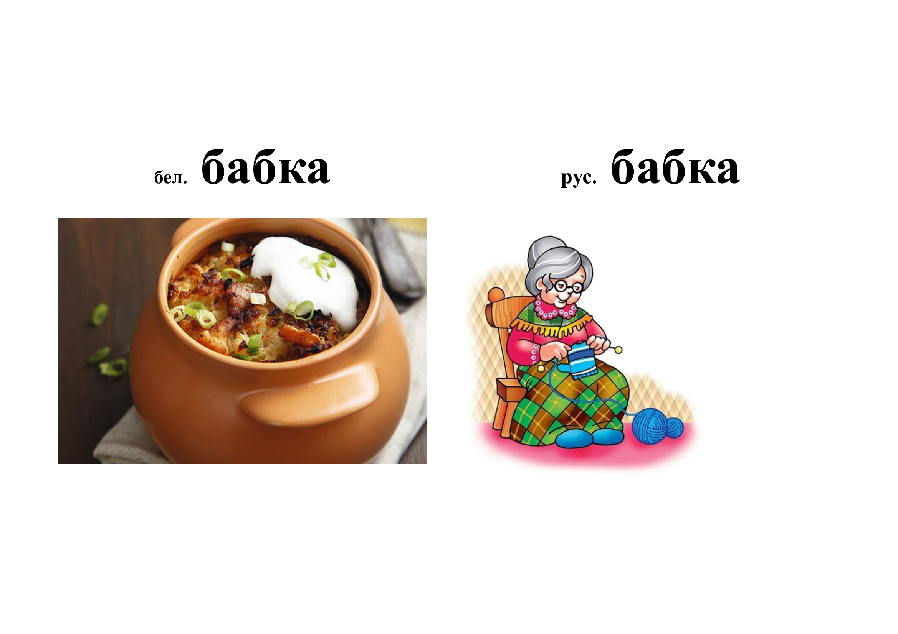
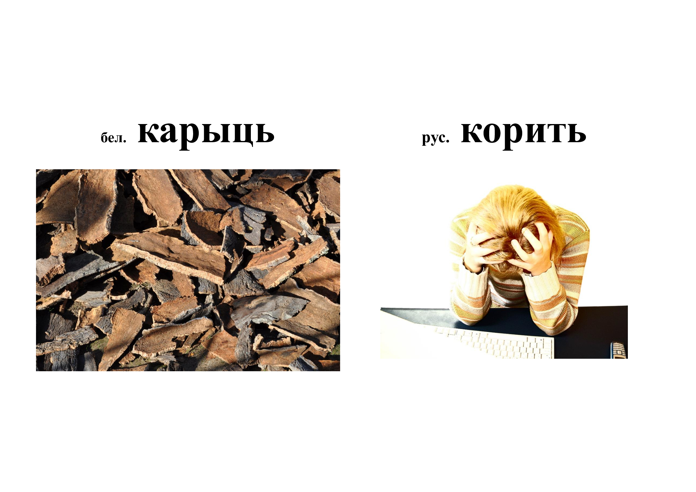
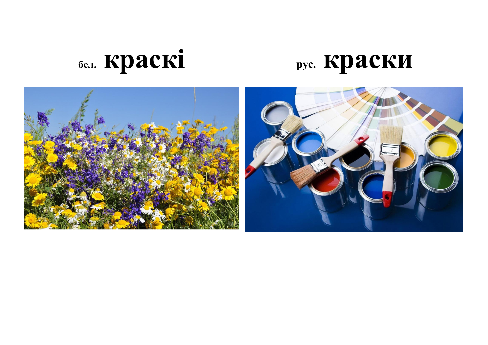

ДАСЛЕДАВАННЯ
Слова «амонім» паходзіць ад грэч. слова homos – ‘аднолькавы’ і onyma – ‘імя’ і абазначае слова,
якое
аднолькава гучыць з іншым словам, але адрозніваецца ад яго сваім значэннем [ТСБМ, Т.1, с. 229].
Нягледзячы на вялікую колькасць прац, прысвечаных гэтай тэме, не існуе адзінага тлумачэння з’явы
аманіміі. У кнізе «Омонимия как системная категория языка» А. І. Галаўня вылучыла чатыры падыходы
да
вызначэння паняцця «амонім». Згодна з першым, амонімы – гэта словы, якія маюць аднолькавы
фанетычны
корпус, але рознае значэнне, незалежна ад іх графічнага напісання. Такога ж падыходу
прытлімліваюцца
такія даследчыкі, як В. У. Вінаградаў, В. С. Ахманава, Л. А. Булахоўскі, Б. Трнка і інш.
Паводле другога падыходу, амонімы разумеюць як словы, у якіх пры супадзенні гучання і пры
рознасці
значэнняў павінна быць аднолькавае напісанне. Такога меркавання прытрымліваліся І. У. Арнольд,
М. М. Шанскі, М. Х. Ахцямаў і В. В. Броўн.
Пры трэцім падыходзе амонімы разглядаюцца як словы, якія аднольнакава гучаць, але маюць рознае
значэнне і напісанне. Гэтай думкі трымаліся К. Агата і Р. Інглот. Існуе і процілеглае паняцце
амонімаў, пазначанае ў «Этымалагічным слоўніку» В. Скіта, дзе аўтар ставіць графічнае
падабенства
вышэй за гукавое.
К. Ч. Кусаль пісаў, што дзякуючы непазбежнасці моўных змен і выпадковаму характару многіх іх
вынікаў,
з’яўленне амонімаў у мове аказваецца заўсёды заканамерным. Менавіта асіміляцыя прыпадабняе
запазычанае слова роднаснаму і «…з’яўленне новага слова-амоніма са сферы чужой мовы (ці
дыялекта)
з’яўляецца, з сацыяльнага пункта погляду, - камунікатыўнай неабходнасцю» [7, с. 8].
Развіццё аманіміі часта разглядаецца з пазіцыі карысці і шкоды. Напрыклад, Л. А. Булахоўскі і Р.
А. Будагаў разглядаюць аманімію як няшкодную моўную з’яву. У сваю чаргу А. А. Рэфармацкі пісаў,
што
амонімы «…гэта вынік супадзенняў, і наўрад ці маюць рацыю тыя, хто сцвярджае, што ўзнікненне
амонімаў – гэта ўзбагачэнне слоўнікавага складу мовы (такое разважанне можа адносіцца толькі да
апошняга выпадку). Хутчэй, наадварот, амонімы ва ўсіх выпадках – гэта непрыемная
нераспазнавальнасць
таго, што павінна адрознівацца» [9, с. 94].
У сваю чаргу К. Ч. Кусаль адзначаў, што аманімія можа перашкаджаць працэсу камунікацыі, але
«…з’яўленне новага слова-амоніма са сферы чужой мовы (ці іншага дыялекту) з’яўляецца, з пункта
гледжання сацыяльнага, – камунікатыўнай неабходнасцю» [7, с. 8], якая звязана з прынцыпам
эканоміі
гукавых сродкаў.
У 1991 годзе ў Мінску выйшаў «Слоўнік амонімаў беларускай мовы» В. Д. Старычонка, у які аўтар
уключыў
каля дзвюх тысяч слоўнікавых артыкулаў, кожны з якіх змяшчае пары ці групы амонімаў з мноствам
розных значэнняў, і прыводзіць прыклады.
Вывучэннем міжмоўнай аманіміі займаліся Г. А. Гальперын, Р. А. Будагаў, П. П. Шуба, І. С. Роўда,
К. Ч. Кусаль, А. І. Галаўня, В. Л. Мураўёў і інш.
Паколькі мовы не могуць існаваць ізалявана адна ад адной, узнікае з’ява міжмоўнай аманіміі, што
выклікае шмат пытанняў, адным з якіх з’яўляецца пытанне месца і статусу гэтай з’явы ў сістэме
мовы.
Міжмоўная аманімія, г. зн. падабенства слоў, якія належаць розным моўным сістэмам, – з’ява
іншага
плана, для якой патрэбна асобная назва. Міжмоўныя амонімы яшчэ называюць «фальшывымі сябрамі
перакладчыка» (М. Кеслер і Дж. Дэракіньі), міжмоўнымі аналагізмамі (К. М. Готліб), міжсістэмнай
аманіміяй (А. І. Галаўня) і інш.
І. С. Роўда адзначае, што перад тым як пачынаць гаворку пра міжмоўныя амонімы, неабходна, «…каб
дзве
мовы, сістэмам якіх належаць міжмоўныя пары лексем, былі сродкам камунікацыі ў адных і тых жа
людзей, г. зн. неаобходна кантактаванне моў» [10, с. 4]. Такім чынам, міжмоўныя амонімы – гэта
словы
розных моў, якія з’яўляюцца аднолькавымі па гучанні, блізкімі альбо тоеснымі па напісанні, але
семантычна не супадаюць.
Адрозненні ў значэнні міжмоўных амонімаў могуць быць абумоўлены выпадковым супадзеннем слоў рускай
і
беларускай мовы па форме (з пункта погляду сінхроннага аналізу), унутрымоўнай аманіміяй і
полісеміяй.
Сістэмнае вывучэнне суадносін паміж мовамі пачалося ў 1928 годзе з працы М. Кеслера і Ж. Дэрканьі
на
матэрыяле французска-англійскіх і англа-французскіх паралеляў. Імі і быў прапанаваны тэрмін
«faux
amis du traducteur», ці «фальшывыя сябры перакладчыка». «Фальшывых сяброў перакладчыка» можна
падзяліць на «цалкам фальшывыя», у якіх сходзіцца арфаграфія і разыходзіцца семантыка, і
«часткова
фальшывыя», якія сходзяцца ў арфаграфіі і ў асноўным з агульнай семантыкай [7, с. 13].
Тэрмін «фальшывыя сябры перакладчыка» нагадвае, што неабходна з увагай ставіцца да моўных
асаблівасцей той ці іншай мовы. Каб пазбегнуць памылак пры перакладзе тэксту ці вуснага
выказвання
(у нашым выпадку з беларускай мовы на рускую ці наадварот), патрэбна мець хаця б мінімальныя
тэарэтычныя звесткі пра з’яву міжмоўнай аманіміі.
Р. А. Будагаў пісаў, што праблема «фальшывых сяброў перакладчыка» абумоўлена непаўторнасцю,
самастойнасцю кожнай мовы, якая мае сваю пісьменнасць і традыцыі.
Прынята лічыць, што само паняцце «фальшывыя сябры перакладчыка» значна шырэйшае за тэрмін
«міжмоўныя
амонімы», таму што ўключае ў сябе ўсе лексічныя адзінкі, якія могуць выклікаць няправільныя
асацыяцыі – міжмоўныя амонімы, міжмоўныя паронімы, этымалагічныя дублеты і г. д. Але некаторыя
даследчыкі, напрыклад Р. А. Будагаў, тэрміны «міжмоўныя амонімы» і «фальшывыя сябры
перакладчыка»
ўжываюць як сінонімы.
Аднак існуе і супрацьлеглы погляд К. Ч. Кусаля, які лічыць, што «…называць міжмоўныя амонімы
тэрмінам
“фальшывыя сябры перакладчыка”, які складаецца з метафарычнай перыфразы, было б няправільна:
такая
назва не адлюстроўвае фундаментальнага сіментрычна-асіметрычнага боку з’явы, таму что аманімія –
гэта праяўленне сіметрыі формы пры асіметрыі зместу» [7, с. 13].
П. П. Шуба ў артыкуле «Міжмоўная беларуска-руская аманімія і паранімія» звяртае ўвагу на некалькі
аспектаў узнікнення міжмоўных амонімаў:
разрыў некалі адзінай сістэмы значэнняў полісемантычнага продка;
вынік фанетычнага супадзення (або падабенства) незапазычанага і запазычанага слоў, калі наяўнасць
запазычання адзначана толькі для адной з разглядаемых пар слоў;
самастойныя фанетычныя і граматычныя працэсы, якія праходзяць не заўсёды паралельна і ў
блізкароднасных мовах [14, с. 110–111].
У дадзенай рабоце мы прытрымліваемся навуковага погляду І. С. Роўды, Н. В. Заслаўскай, П. П. Шубы
на
з’яву міжмоўнай аманіміі, а таксама К. Ч. Кусаля, які лічыў, што ўжываць тэрміны «фальшывыя
сябры
перакладчыка» і «міжмоўныя амонімы» ў якасці сінонімаў нельга.
У сучасным беларускім і рускім мовазнаўстве не існуе адзінай класіфікацыі з’явы міжмоўнай
аманіміі.
Разыходжанне ў поглядах звязана з наяўнасцю шматлікіх варыянтаў да падыходу пры разглядзе
міжмоўных
амонімаў.
Разыходжанні па форме з ўлікам розных заканамернасцей улічыў І. С. Роўда ў сваёй класіфікацыі
міжмоўных амонімаў на аснове беларускай і рускай моў.
1. Міжмоўныя амонімы, якія поўнасцю супалі па форме. Напрыклад, рус. трус (‘человек, легко
поддающийся чувству страха’, бел. баязлівец) – бел. трус (‘сходное с зайцем животное, грызун, а
также мех его’, рус. кролик).
2. Міжмоўныя амонімы, разыходжанне ў форме якіх можна аднесці да заканамерных фанетычных
адпаведнасцей. Напрыклад, рус. качка (‘качание судов при волнении’, бел. гайданка) – бел. качка
(‘водоплавающая птица с широким клювом, короткой шеей и короткими, широко поставленными лапами’,
рус. утка).
3. Міжмоўныя амонімы, разыходжанне ў форме якіх можна аднесці да заканамерных графічных
адпаведнасцей. Напрыклад, бел. ліст (А. ‘Тонкий плоский кусок, пласт какого-н. материала’, рус.
лист. Б. ‘Написанный текст, посылаемый для сообщения чего-л. кому-л.’, рус. письмо) – рус. лист
(знач. ‘А’ бел. ліст).
4. Міжмоўныя амонімы, разыходжанне ў форме якіх можна аднесці да заканамерных
марфемна-словаўтваральных адпаведнасцей. Напрыклад, бел. укруціць (А. ‘Плотно завернуть, одеть
во
что-н.’, рус. закутать. Б. ‘Крутя, вставить’, рус. вкрутить) – рус. вкрутить (знач. ‘Б’ бел.
укруціць).
5. Міжмоўныя амонімы, разыходжанне ў форме якіх можна аднесці да заканамерных арфаграфічных
адпаведнасцей. Напрыклад, рус. местный (‘здешний, не приезжий, не привозной’, бел. мясцовы) –
бел.
месны (‘предложный’ – пра падзеж).
6. Міжмоўныя амонімы, разыходжанне ў форме якіх можна аднесці да заканамерных акцэнталагічных
адпаведнасцей. Напрыклад, бел. даве́сці (І ‘ведя, доставить до какого-н. места’, рус. довести.
ІІ
‘Подтвердить какое-н. положение фактами или доводами’, рус. доказать) – рус. довести́ (знач.
бел.
даве́сці І) [10, с. 7–8].
П. П. Шуба адзначаў, што класіфікацыя міжмоўных амонімаў можа быць шматмернай. Усё залежыць ад
паслядоўнасці размяшчэння наступных трох асноў падзелу.
Згодна з раздзяленнем мовы на вусную і пісьмовую, даследчык вылучыў рад аманімічных груп:
словы, якія практычна супадаюць у гучанні і маюць аднолькавае напісанне (маюцца на ўвазе
беларуска-рускія амонімы)
;
словы, якія практычна супадаюць у гучанні, але адрозніваюцца ў напісанні (залежаць ад
заканамерных
адпаведнасцей графем);
словы, падобныя ў гучанні і ў напісанні (і вусныя, і пісьмовыя «вобразы» слоў звязаны
заканамернымі
адпаведнасцямі);
словы, розныя ў гучанні, але аднолькавыя ў напісанні (адрозненні зводзяцца да розніцы ў перадачы
заканамерных фанетычных адпаведнасцей).
Другая група падзяляе амонімы ў залежнасці ад часцінамоўнай прыналежнасці: адносяцца да адной
часціны
мовы, альбо да розных.
Згодна з трэцяй асновай падзелу, міжмоўная аманімія часта пераплятаецца з унутрымоўнай аманіміяй
і
полісеміяй, таму ў аманімічную пару можа ўваходзіць толькі адзін з амонімаў у беларускай ці
рускай
мовах.
П. П. Шуба пры класіфікацыі міжмоўных амонімаў згодна з аднясеннем слоў да адной ці другой
часціны
мовы падкрэслівае: «Супадзенне або падабенства слоў не толькі ў зыходнай форме, але і ў радзе
іншых
форм (іншы раз ва ўсіх формах парадыгмы) павялічвае “ўдзельную вагу” такіх амонімаў ў маўленні.
Менавіта таму названая аснова класіфікацыі прызнаецца асноўнай» [14, с. 113].
Н. В. Заслаўская вылучае абсалютныя (поўныя) міжмоўныя амонімы і адносныя (няпоўныя). Даследчыца
адзначае, што першыя ўтвараюць лексічныя пары, якія абумоўлены ўнутрымоўнай аманіміяй ці
выпадковым
супадзеннем па форме і характарызуюцца поўным разыходжаннем семантычнай структуры, а другія
абумоўлены полісеміяй адной з моў і захоўваюць асобныя агульныя значэнні. У складзе адносных
(няпоўных) міжмоўных амонімаў даследчыца вылучыла амонімы, якія супадаюць у частцы прамых
значэнняў,
але адрозніваюцца некаторымі з іх; якія супадаць у прамым, але адрозніваюцца ў пераносным
значэнні
ці ў семантычным адценні; амонімы блізкія па значэнні, але розныя па сферы выкарыстання і па
стылістычных функцыях. А таксама:
лексемы, што маюць народна-паэтычную афарбоўку ў адной мове і нейтральную ў іншай;
лексемы, што адрозніваюцца эмацыйна-экспрэсіўнай афарбоўкай;
лексемы, што належаць да розных пластоў лексікі;
лексемы, што ў адной мове з’яўляюцца агульналітаратурнымі, у другой – дыялектамі [6, с. 5–7].
Такім чынам, у беларускім мовазнаўстве не існуе адзінага погляду не толькі на паняцце «амонімы»,
«міжмоўныя амонімы», але і на сам падыход класіфікацыі міжмоўных амонімаў.



чаргу ў складзе няпоўных міжмоўных амонімаў мэтазгодна вылучыць:
аманімічныя пары, абумоўленыя адназначнасцю ў рускай і полісеміяй у беларускай мове;
аманімічныя пары, абумоўленыя адназначнасцю ў беларускай і мнагазнаснасцю ў рускай мове;
аманімічныя пары, абумоўленыя аманіміяй ў беларускай мове;
аманімічныя пары, абумоўленыя аманімічнасцю ў рускай мове;
аманімічныя пары, што супадаюць у частцы прамых значэнняў, але адрозніваюцца некаторымі з іх;
аманімічныя пары, якія супадаюць ва ўсіх значэннях, але маюць дадатковае значэнне ў аднаго з амонімаў;
аманімічныя пары, якія характарызуюцца стылістычнай неадпаведнасцю.